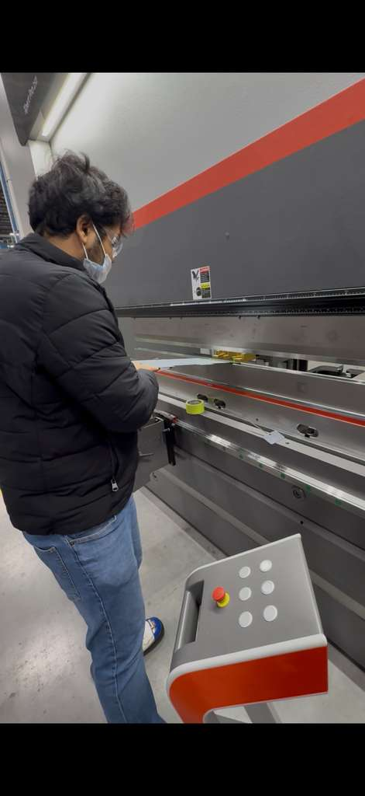
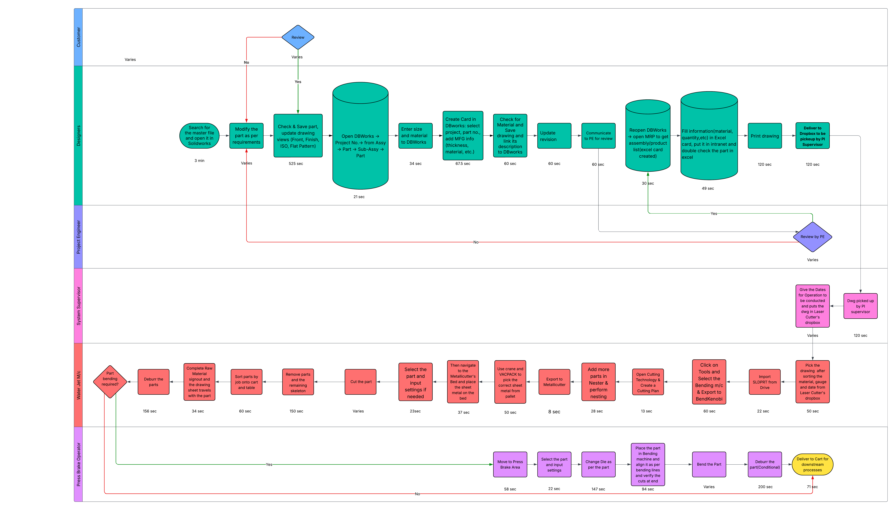
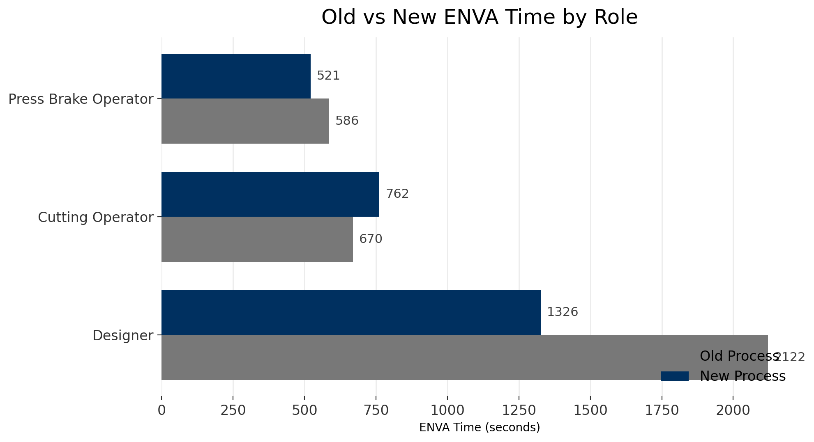
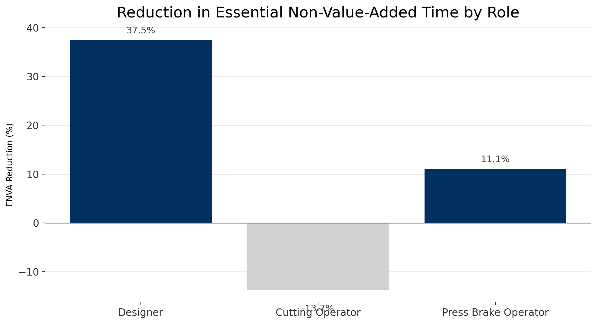
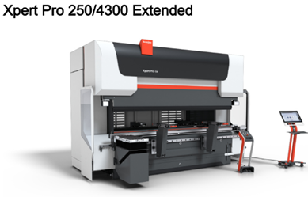

Reduced the 48-step process
I used PDCA and time studies to identify waste in the fabrication sequence, then redesigned the flow to remove 9 non-value-added steps and reduce cycle time by 37% per part.
Continuous Improvement Engineer Consultant | Sun Prairie, WI | Sep 2025 - Dec 2025
At Sani-Matic, I redesigned a 48-step sheet-metal fabrication workflow using PDCA and time studies, removed 9 non-value-added steps, and verified a 37% cycle-time reduction per part. The implemented workflow saved $60,729.82 annually while improving reliability through automation validation, SWI, and SPC.

Cycle-time reduction per part
Non-value-added steps eliminated
Verified annual savings
Annual labor hours saved
Production reliability improvement
What I Implemented
The work moved beyond analysis. I helped convert process observations into implemented changes: a cleaner fabrication sequence, validated automation behavior, stronger standard work, and measured quality controls.
I used PDCA and time studies to identify waste in the fabrication sequence, then redesigned the flow to remove 9 non-value-added steps and reduce cycle time by 37% per part.
I led cross-functional automation work through manufacturing system integration and executed IQ/OQ/PQ validation so the new process could run reliably in production.
I drafted standardized work instructions, validation protocols, and SPC controls that reduced defect risk and supported a 22% improvement in production reliability.
Evidence From The Project



Validation And Sustainment

Skills Applied
This page highlights the tools I used directly: PDCA, time studies, APQP, IQ/OQ/PQ, SWI, SPC, system integration, and cross-functional execution on a live fabrication process.
PDCA, time studies, lead-time reduction, non-value-added step elimination
IQ/OQ/PQ execution, validation protocols, production readiness checks
SPC implementation, APQP thinking, defect-rate reduction, reliability controls
SWI drafting, operator-ready process documentation, sustainment support